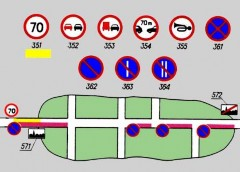
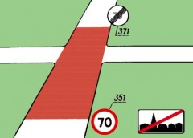
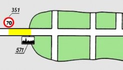
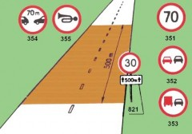
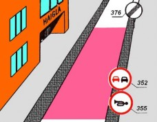
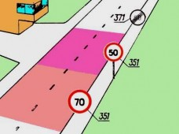
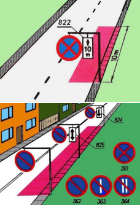
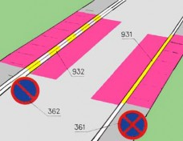

ДОПОЛНИТЕЛЬНЫЕ ПОЯСНЕНИЯ К ЗАПРЕЩАЮЩИМ ЗНАКАМ
Зона действия знаков 35 и 36 распространяется:

в населенных пунктах - от места установки знака до ближайшего перекрестка за ним, за исключением перекрестков, образованных примыканием грунтовой дороги к дороге с твердым покрытием, а при отсутствии перекрестка
- до конца населенного пункта или до знака, отменяющего данное ограничение, либо на расстояние, указанное в табличке с дополнительной информацией возле знака;

за пределами населенных пунктов - от места установки знака до знака, отменяющего данное ограничение, либо на расстояние, указанное в табличке с дополнительной информацией возле знака.
Конец зоны действия знака указывается:

для знака 351, установленного перед населенным пунктом, - знаком 571;

для знаков 35 применением таблички 821,
установленной под знаком;
для знаков 351, 352 и 353 - соответственно знаками 371, 372 и 373;

знаком 376;

для знака 351 - повторным знаком 351 или знаком 382, на котором указана иная максимальная скорость;
для знака 361 - знаком 362;
для знака 362 - знаком 361;

для знаков 36 применением таблички с дополнительной информацией 822 или 823, размещенной под знаком, или другого знака 36 вместе с табличкой 824, установленного в конце зоны действия знака.

Зона действия знаков 36 не распространяется на прилегающие к тротуарам места парковки, обозначенные знаком 575а или 575с, а также на транспортные средства, припаркованные в соответствии с указанием таблички с дополнительной информацией 86 или 874, установленной под
знаком 575а или 575с.
Если знак 361 применяется вместе с дорожной разметкой 931, а знак 362 - вместе с разметкой 932, то зона действия этих знаков определяется протяженностью соответствующей линии разметки.